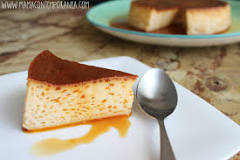

Volver Quesillo sencillo, rico y fácil  ingredientes: 6 Huevos Leche (la misma medida de la lata de leche condensada) 5 cucharadas de azúcar (para el caramelo) Vainilla 1 lata de Arequipe 1 chorrito de ron Preparación: ver más...